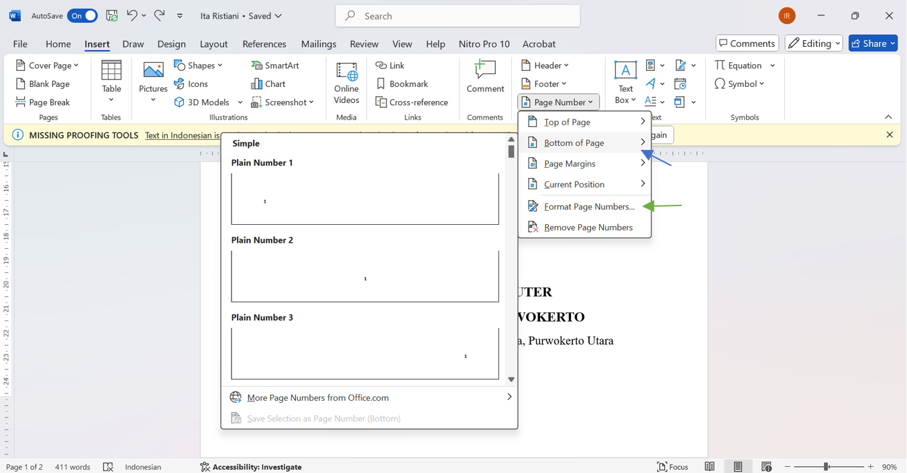
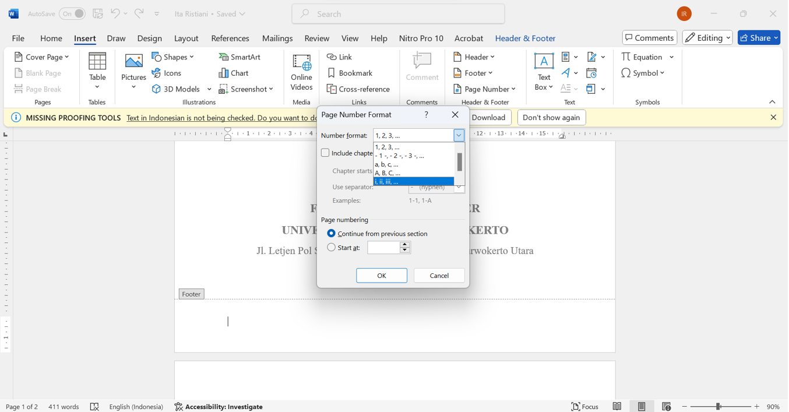
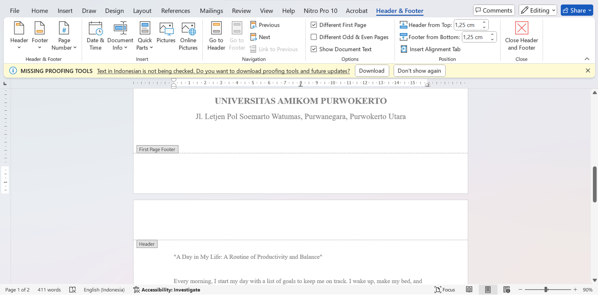
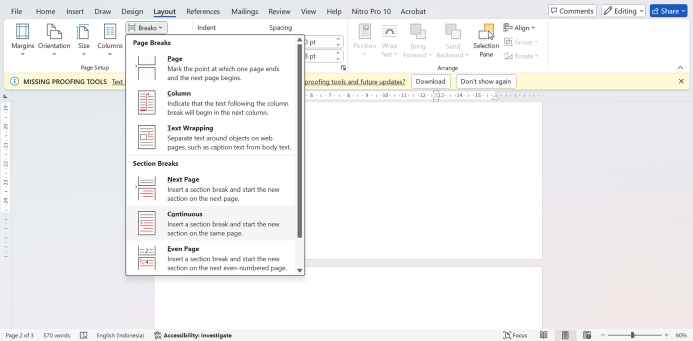
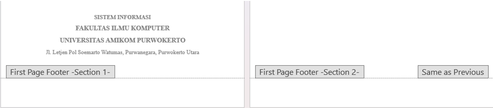
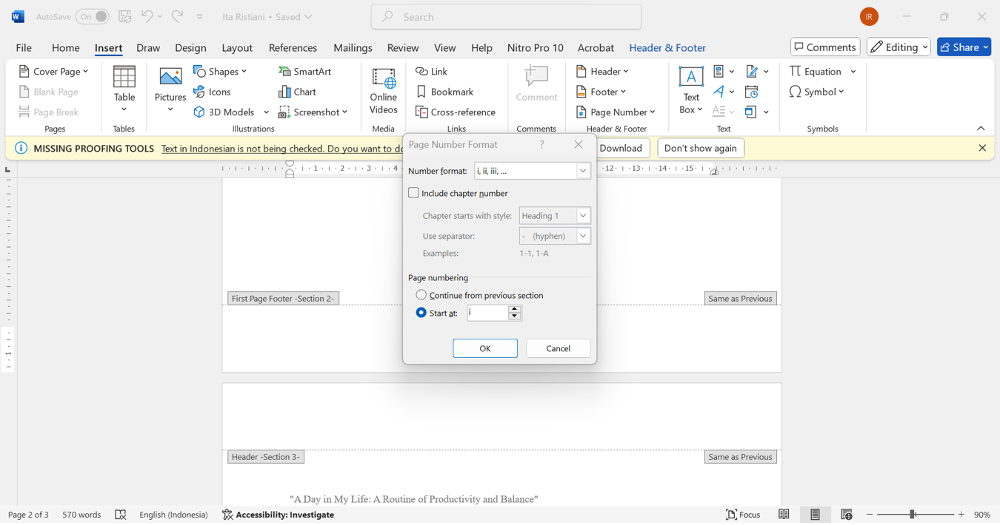
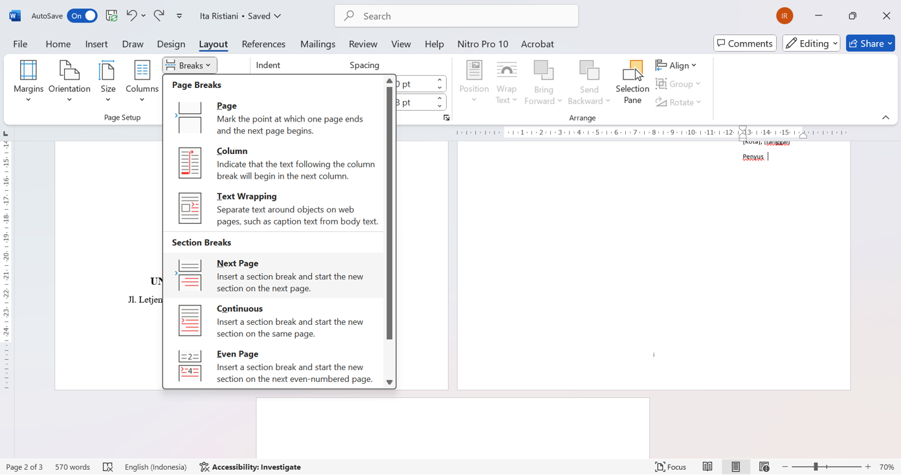
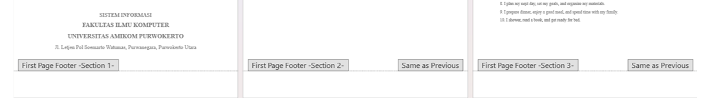
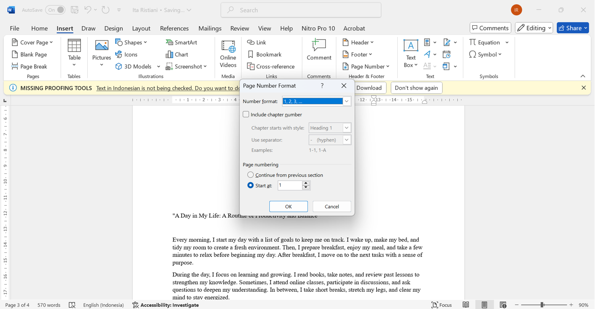
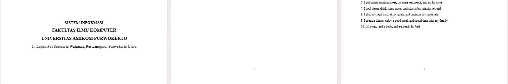

Salah satu fitur penting dalam Microsoft Word adalah kemampuan untuk mengatur nomor halaman dengan cara yang berbeda, yang dapat membantu meningkatkan keterbacaan dan memberikan struktur yang lebih baik pada dokumen Anda.
Dalam tutorial ini, Anda akan mempelajari langkah-langkah untuk membuat nomor halaman yang berbeda di Microsoft Word. Kami akan membahas cara mengatur nomor halaman untuk bagian tertentu dari dokumen. Dengan mengikuti panduan ini, Anda akan dapat menghasilkan dokumen yang lebih profesional dan terorganisir. Mari kita mulai!
1. Klik Insert pada Tab menu
2. Pilih page Number, kemudian pilih posisi angka halaman pada tanda panah biru
3. Pilih page number lagi
4. Klik pada panah hijau
5. Pilih number format
6. Setelah muncul Number format yang dipilih, untuk menghilangkan bagian cover dengan cara klik centang pada Different First Page
Cara membuat Nomer halaman pada bagian pengantar menggunakan Romawi
7. Pada kalimat terakhir kemudia klik layout, lalu break dan continuous
8. Maka akan muncul seperti gambar dibawah
9. Lalu pilih Insert kemudian page number, dan pilih number format romawi
Cara membuat Nomer halaman pada bagian pengantar menggunakan Angka
10. Pada kalimat terakhir kemudia klik layout, lalu break dan next page
11. Maka akan muncul seperti gambar dibawah
12. Lalu pilih Insert kemudian page number, dan pilih number format Angka
13. Maka akan menghasilkan nomer halaman seperti gambar di bawah ini
